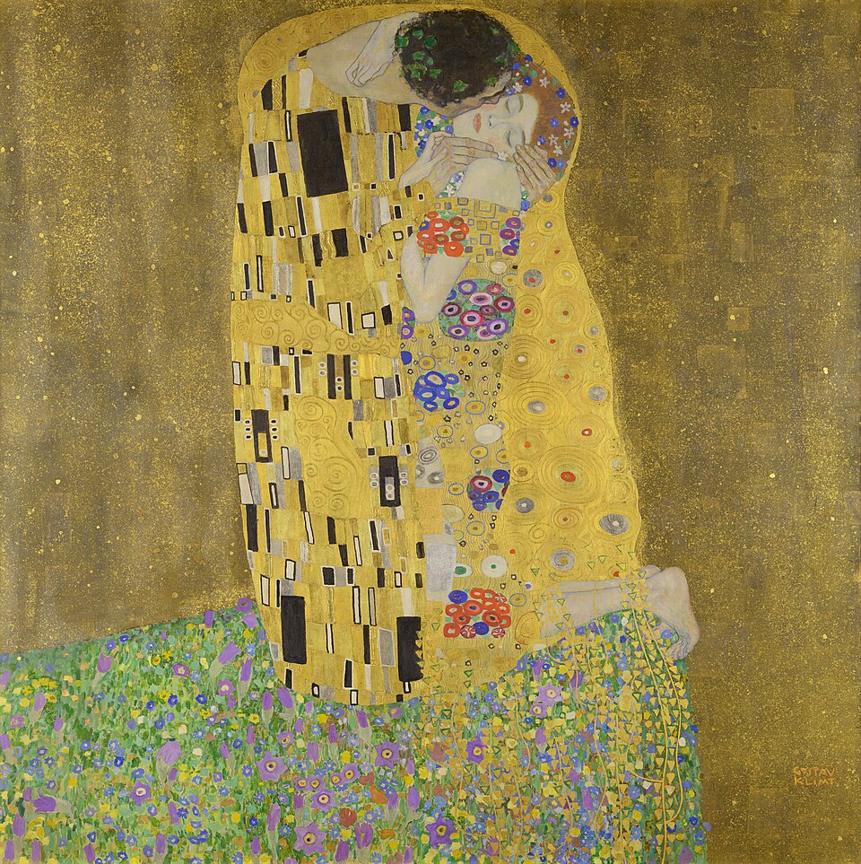
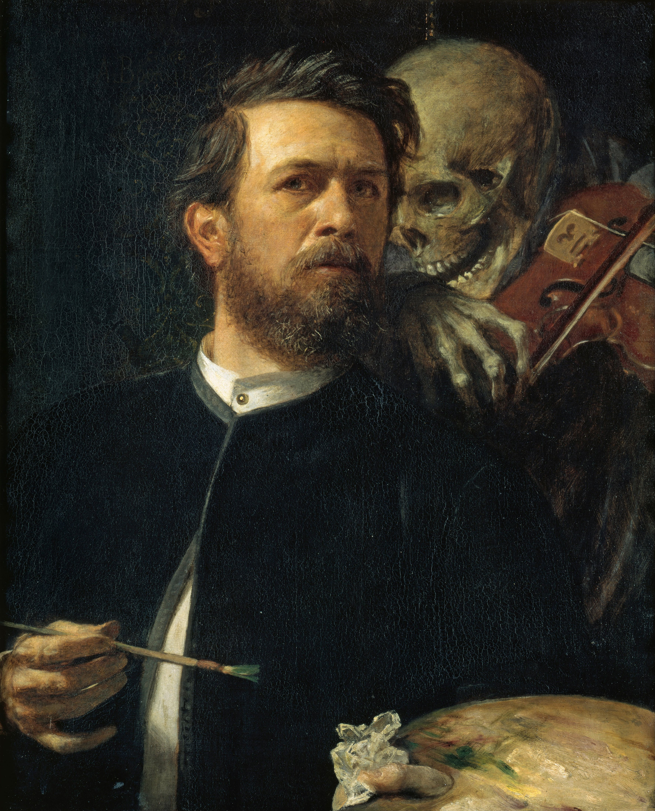
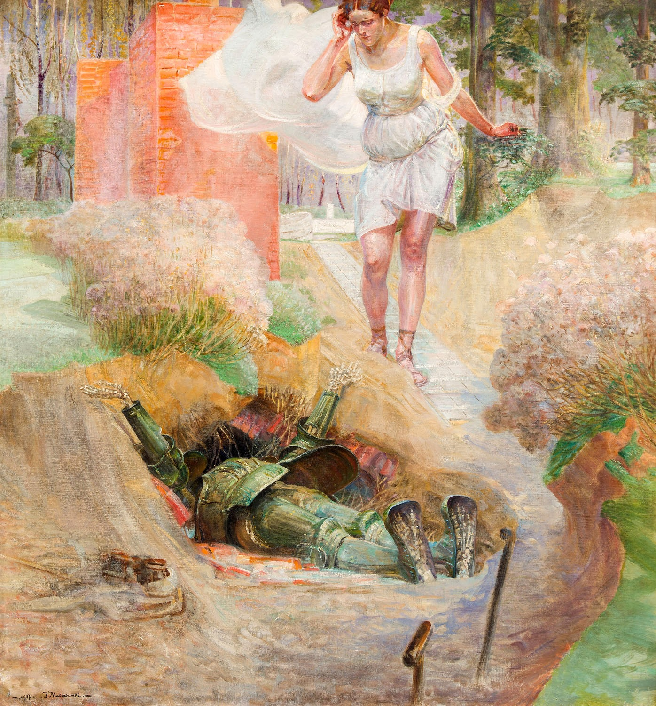
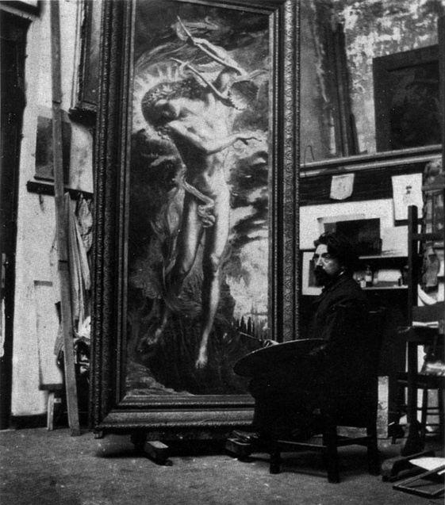
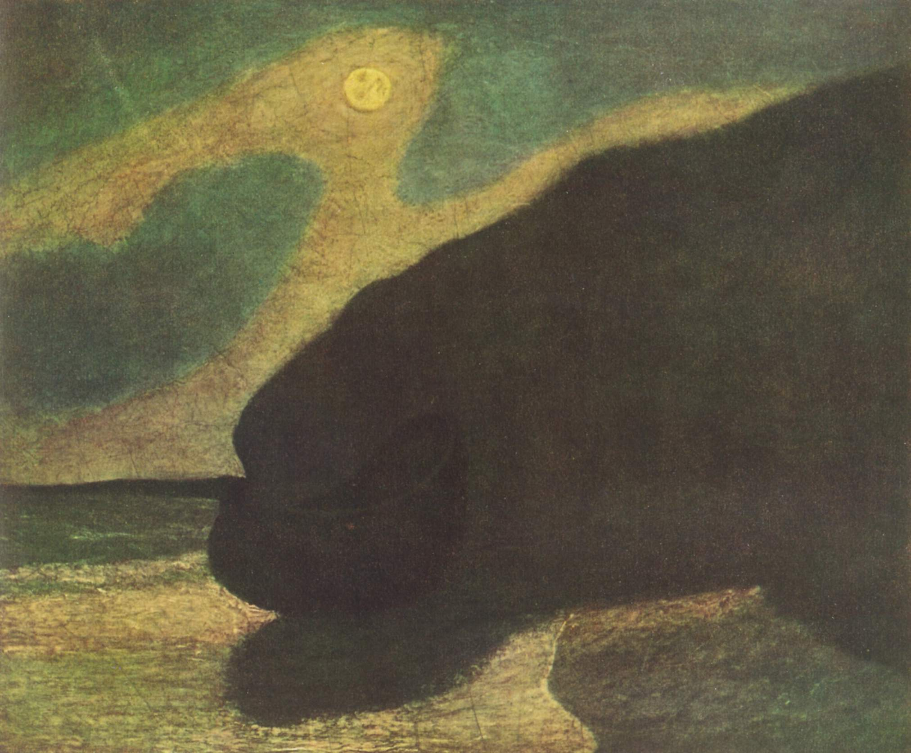

Meesterwerk: De Droom
Henri Rousseau, 1910

⚜️ UITGEBREIDE STIJLFIGUREN
🌙 MYSTIEK & HET ONBEKENDE
Niet de zichtbare wereld: Innerlijke visioenen, dromen, mythen, nachtmerries.
Sfeer: Nacht, schemering, het occulte. Het onzichtbare wordt zichtbaar.
🔗 Tijdsgeest Connecties
Psychologie: Freud's droomtheorie (1900) - dromen als poort naar het onderbewuste
Occultisme: Spiritisme, theosofie (Blavatsky), esoterische genootschappen
Literatuur: Baudelaire's "Les Fleurs du Mal" (1857) - kunst uit het duister
👤 DE VROUW ALS SYMBOOL
Femme Fatale: De verleidster, de heks, de dodelijke schoonheid.
De Maagd: Purity, onschuld, het onaantastbare ideaal.
🔗 Tijdsgeest Connecties
Politiek: Vrouwenemancipatie - de "New Woman" bedreigt de patriarchale orde
Literatuur: Moreau's "Salomé", Wilde's "Salome" (1891) - dodelijke vrouw
Psychologie: Jung's anima - de vrouw als projectie van mannelijke psyche
💀 DOOD & DECADENCE
Morbide fascinatie: Dood, verval, lijkenschoonheid.
Decadence: Schoonheid in verval, esthetisering van de ondergang.
🔗 Tijdsgeest Connecties
Historisch: Fin de siècle - einde van een eeuw, einde van een tijdperk
Literatuur: Huysmans' "À rebours" (1884) - de decadente estheet
Politiek: Verval van aristocratie, opkomst van democratie - angst voor massa
🎨 STILERING & DECORATIE
Figuren als types: Niet individuen maar archetypes, symbolen.
Decoratief: Vlakke patronen, ornament, invloed op Art Nouveau.
🔗 Tijdsgeest Connecties
Wetenschap: Ontdekking van "primitieve" kunst - Egypte, Azië, Afrika
Kunst: Gauguin in Tahiti (1891) - vlucht naar het "pure"
Filosofie: Schopenhauer - kunst als ontsnapping aan de wil
📚 TIJDSGEEST CONTEXT (1886-1905)
🌍 POLITIEK PERSPECTIEF - UITGEBREIDE ANALYSE
Het Symbolisme (1880-1910) bloeide tijdens de fin de siècle, een periode van diepe culturele pessimisme en decadentie die de Europese intellectuele elite in zijn greep hield. De politieke structuur werd gekenmerkt door een fundamentele revolte tegen materialisme, rationalisme, positivisme en de bourgeois-liberale democratie. Deze generatie omarmde daarentegen emotionalisme, irrationalisme, subjectivisme en vitalisme, gedreven door het gevoel dat de beschaving in een crisis verkeerde die een totale oplossing vereiste. De filosoof Arthur Schopenhauer had met zijn pessimistische wereldbeeld de intellectuele toon gezet: kunst diende als tijdelijke toevluchtsoord uit de wereld van strijd en lijden. Deze filosofische onderstroom vond directe expressie in de symbolistische esthetiek, waarin droomtoestanden en het subjectieve innerlijk werden verheerlijkt boven rationele observatie.
Belangrijke politieke gebeurtenissen omvatten de opkomst van het anarchistisch activisme in de jaren 1890. Anarchisten pleegden bomaanslagen en moorden die de publieke opinie schokten, wat leidde tot repressieve wetten die de vrijheid van meningsuiting beperkten. Tegelijkertijd ondermijnde de opkomst van wetenschappelijke rationaliteit, psychologie en secularisering de traditionele religieuze zekerheden. De degeneratietheorie van B.A. Morel en Max Nordau's invloedrijke werk 'Degeneration' (1892) suggereerden dat samenlevingen konden degenereren onder invloed van nationale omstandigheden of buitenlandse culturele invloeden. Nordau identificeerde twee dominante trekken bij gedegenereerden: egomanie (pathologische zelfabsorptie) en mystiek (verminderd vermogen om primaire waarnemingen te vertalen tot volledig ontwikkelde ideeën). Deze kenmerken werden direct toegepast op symbolistische werken, die werden gezien als uitingen van maatschappelijk verval. Desondanks zochten intellectuelen naar alternatieve spirituele paden, waardoor het symbolisme een reactie werd tegen zowel wetenschappelijk materialisme als politiek positivisme.
De sociale dynamiek werd gekenmerkt door een zich terugtrekkende intellectuele elite die zich in privé-salons en exclusieve kringen organiseerde. Figuren zoals Joséphin Péladan, een occultist die de Salon de la Rose + Croix oprichtte (1892-1897), promootten spiritualisme, mystiek en idealisme. Symbolistische kunstenaars identificeerden zich als 'poètes maudits' (vervloekte dichters) – vervreemd van de bourgeois maatschappij, geplaagd door existentiële angst en een obsessie met de dood, seksualiteit en het bovennatuurlijke. Paul Verlaine's essayreeks over 'poètes maudits' (1884) portretteerde dichters wiens genialiteit hen isoleerde van tijdgenoten en leidde tot hermetische schrijfstijlen. Deze elite distantieerde zich bewust van het massapubliek en zocht naar een persoonlijke, hermetische taal van symbolen die alleen ingewijden konden decoderen. Alternatieve spiritualiteit bloeide als tegenreactie op zowel het christendom als wetenschappelijk positivisme: occultisme, hermetisme, rozenkruisersbewegingen en spiritisme wonnen aan populariteit.
De verbinding met de artistieke stijl is direct: de politieke context van maatschappelijke onzekerheid, culturele pessimisme en de zoektocht naar alternatieve zekerheden vertaalde zich in een kunst die droomtoestanden, het occult en het subjectieve innerlijke wereld verheerlijkte. Waar naturalisten en realisten de sociale werkelijkheid probeerden vast te leggen, zochten symbolisten naar de eeuwige waarheden achter de zichtbare wereld. Stéphane Mallarmé definieerde symbolisme als 'het object evoceren om geleidelijk een zielenstoestand te openbaren'. Het doel was niet het object zelf, maar het suggereren van het ideaal door mysterie. De nadruk op synesthesie – het verwarren van zintuigen zoals geur, klank en kleur – weerspiegelde de wens om de rigide categorisering van de wetenschappelijke wereld te doorbreken. Kunstenaars gebruikten mythologische en droombeeldvorming, met symbolen die intens persoonlijk, privé, obscuur en ambigu waren. De politieke crisis van de fin de siècle – met zijn gelijktijdige angst voor degeneratie en hoop op een nieuwe eeuw – vertaalde zich in een kunst die de grenzen tussen droom en werkelijkheid, leven en dood, eros en thanatos voortdurend liet vervagen.
Bronnen: Wikipedia - Symbolism (movement), Fin de siècle, Decadence.
📖 LITERAIR PERSPECTIEF
Het symbolisme ontstond als een reactie op zowel het naturalisme van Zola als het impressionisme, en zocht naar een diepere, spirituele werkelijkheid achter de oppervlakkige verschijnselen van de alledaagse wereld. Deze beweging vond haar oorsprong in de poëzie, met Charles Baudelaire als voorloper, maar bereikte haar hoogtepunt in de jaren 1880 met dichters als Paul Verlaine, Arthur Rimbaud en Stéphane Mallarmé. Het symbolisme verwierp de letterlijke beschrijving ten gunste van suggestie en evocatie. De symbolisten geloofden dat objectieve werkelijkheid slechts een symbool was van een hogere, onzichtbare waarheid die alleen door middel van poëtische intuïtie kon worden bereikt. Jean Moréas' manifest 'Le Symbolisme' (1886) formuleerde de principes van de beweging en benadrukte de noodzaak om 'ideeën te kleden in een waarneembare vorm' zonder ze direct te beschrijven. De relatie tussen de symbolistische literatuur en de beeldende kunst was fundamenteel en wederzijds. Schilders als Gustave Moreau, Odilon Redon en Pierre Puvis de Chavannes deelden de symbolistische voorkeur voor mythische, droomachtige en esoterische thema's. Moreau's schilderijen van mythologische figuren, doordrenkt van erotische en mystieke betekenissen, pasten perfect bij de literaire symbolisten. Redon's 'noirs', zijn houtskool- en lithografieën, evocerenden een nachtmerrieachtige wereld die rechtstreeks uit de gedichten van Baudelaire of de prozagedichten van Rimbaud kon zijn gestapt. Arthur Rimbaud's theorie van de 'dichtergeleerde' die 'alle zinnen systematisch moet ontregelen' om de essentie van de werkelijkheid te bereiken, vond zijn parallellen in het werk van schilders die de traditionele perceptie uitdaagden. Zijn visionaire gedichten, zoals 'Le Bateau ivre', waren doordrenkt van beelden die de grenzen tussen droom en werkelijkheid vervaagden. Stéphane Mallarmé's poëzie, met zijn notoir moeilijke 'Un coup de dés jamais n'abolira le hasard', zocht naar de essentie van taal zelf. Zijn zondagmiddagbijeenkomsten in zijn appartement aan de Rue de Rome brachten schilders, dichters en musici samen, wat leidde tot een rijke kruisbestuiving. Édouard Manet illustreerde Mallarmé's gedicht 'L'Après-midi d'un faune', wat resulteerde in een van de belangrijkste voorbeelden van samenwerking tussen een dichter en een schilder. De Belgische toneelschrijver Maurice Maeterlinck bracht het symbolisme naar het theater met stukken als 'Pelléas et Mélisande' (1893), die later door Debussy zou worden georkestreerd. Maeterlinck's werk, met zijn stiltes, impliciete dreiging en onuitgesproken emoties, vertoonde sterke overeenkomsten met de schilderijen van Fernand Khnopff, wiens werken even mysterieus en sfeervol waren. De Romantiek van Edgar Allan Poe, vertaald door Baudelaire, beïnvloedde de Europese symbolisten. Poe's nadruk op de 'korte greep' en zijn theorie dat poëzie bovenalles muzikaal moest zijn, werd overgenomen door Verlaine in 'Art poétique': 'De la musique avant toute chose.' Deze nadruk op muzikaliteit en ritme in de poëzie vond zijn visuele equivalent in de decoratieve, lineaire kwaliteiten van de Art Nouveau, die nauw verbonden was met het symbolisme.
🧠 PSYCHOLOGISCH PERSPECTIEF
Het symbolisme duikt diep in de onderwereld van de menselijke psyche, een reactie tegen het materialisme en positivisme van de late negentiende eeuw. De symbolistische mens is geen rationeel wezen, maar een mystiek dier, gedreven door dromen, verlangens, angsten en onbewuste impulsen. Redon, Moreau en Khnopff schilderen niet wat ze zien, maar wat ze voelen en vermoeden – de onzichtbare krachten die achter de zichtbare wereld schuilgaan.
Psychisch gezien waren symbolisten vaak melancholisch, introspectief en gefascineerd door de grenzen van het bewustzijn. Ze lasen Schopenhauer, die de wereld zag als uitdrukking van een blinde wil, en waren beïnvloed door vroege psychologische theorieën over dromen en het onderbewuste. Deze intellectuele context voedde een wereldbeeld waarin de mens een speelbal is van hogere machten – het noodlot, de liefde, de dood, het bovennatuurlijke.
Dominante emoties in het symbolisme zijn existentiële angst, verlangen, verwondering en een diepe weemoed. Er is een constante spanning tussen het aardse en het hemelse, tussen vleselijke begeerte en spirituele zuiverheid. Veel symbolistische werken tonen femme fatales, heiligen, mythische wezens – projecties van innerlijke conflicten over seksualiteit, macht en moraliteit. De vrouw is vaak zowel verleidster als heilige, een archetypische figuur die de dubbelheid van het menselijk verlangen belichaamt.
Individueel versus collectief neemt een bijzondere vorm aan. Symbolisten zochten naar universele waarheden achter individuele ervaringen. Ze gebruikten persoonlijke symbolen om collectieve archetypen uit te drukken. Toch was hun benadering diep individualistisch – elke kunstenaar ontwikkelde een eigen visuele taal, een eigen mythesysteem. Dit weerspiegelt een tijdperk waarin traditionele religies hun grip verloren en kunstenaars nieuwe spirituele paden zochten.
De psychische toestand van kunstenaars als Odilon Redon, die visionaire werelden schiep vanuit een diepe eenzaamheid, of Gustave Moreau, die zijn atelier als tempel inrichtte, suggereert een behoefte aan transcendentie in een onttoverde wereld. Fernand Khnopff, geobsedeerd door zijn zus als muze, verkent de grenzen van familiebanden en onbewuste verlangens. Deze kunstenaars leefden in een staat van permanente introspectie, waarbij kunst werd tot een middel om de psyche in kaart te brengen.
Het symbolisme vertegenwoordigt een psychologische revolutie: de erkenning dat de mens niet alleen een rationeel, maar ook een irrationeel wezen is. Het opent de deur naar het surrealisme en de psychoanalyse, een erkenning dat onze diepste waarheden schuilgaan in schaduwen, dromen en symbolen. De mens is een mysterie, zelfs voor zichzelf. De psychologie van het symbolisme kan worden begrepen als een reactie tegen het positivistische materialisme van de late negentiende eeuw. Waar het realisme en impressionisme de zichtbare wereld vierden, zochten de symbolisten naar de onzichtbare realiteiten daarachter - de droom, de mythe, het onderbewuste. Deze spirituele zoektocht, beïnvloed door theosofie, occultisme en de vroege psychologie, weerspiegelde een diepe menselijke behoefte aan transcendentie in een steeds geseculariseerde wereld. De symbolistische kunstenaar zag zichzelf als ziener, als profeet, als bemiddelaar tussen de materiële en spirituele werelden - een identiteit die zowel grootsheid als isolatie met zich meebracht.
⚙️ HISTORISCH PERSPECTIEF
- Fotografie (1888 Kodak) bedreigt de realistische kunst
- Elektriciteit (Edison 1879), telefoon (Bell 1876), auto (Benz 1886)
- De wereld wordt kleiner, maar ook minder begrijpelijk
- Archeologie onthulde Troje (Schliemann 1873) en Egypte - het verleden is mythischer dan het heden
🎭 FILOSOFISCH PERSPECTIEF
- Schopenhauer's pessimisme - de wereld is wil en voorstelling
- Nietzsche's "God is dood" (1882)
- De crisis van het rationalisme
- Esoterie, theosofie, occultisme bieden alternatieven
- Kunst wordt vervanger van religie - de kunstenaar als priester, het kunstwerk als sacrament
🎨 MEESTERWERKEN - GEDETAILLEERDE ANALYSE
1. "De Droom" (1910) — Henri Rousseau
MoMA, New York | 205 × 299 cm | Olieverf op doek
🔍 STIJLANALYSE
Naïeve stijl: Rousseau was autodidact. Perspectief is "fout" maar creëert droomachtige sfeer.
Jungle: Exotische planten uit de botanische tuin van Parijs. Nooit in een jungle geweest.
Mystiek: Een naakte vrouw op een sofa in de jungle, een slangenbezweerder. Logica is opgeheven.
Betekenis: De droom als alternatieve werkelijkheid - precies het Symbolisme.
2. "De Kus" (1907-1908) — Gustav Klimt
Belvedere, Wenen | 180 × 180 cm | Olieverf en goudblad

🔍 STIJLANALYSE
Symboliek: Liefde als mystieke vereniging. Man en vrouw verstrengeld in ornament.
Goud: Byzantijnse invloed. Het goud verwijst naar heiligheid, eeuwigheid.
Decoratief: Bijna abstract. Figuren verdwijnen in patroon. De rand tussen figuur en achtergrond vervaagt.
Wenen: Het fin-de-siècle Wenen van Freud, Schönberg, Schnitzler - een cultuur op zijn hoogtepunt en einde.
3. "Geest van de Doden Wenkt" (1872) — Arnold Böcklin
Alte Nationalgalerie, Berlijn | 75 × 61 cm | Olieverf op doek

🔍 STIJLANALYSE
Zelfportret: Böcklin schildert zichzelf terwijl de Dood achter hem op de viool speelt - een memento mori.
Symboliek: De Dood als skelet met viool, die de schilder herinnert aan zijn sterfelijkheid terwijl hij werkt.
Sfeer: Het donkere palet, de intensiteit van de blik - kunstenaar tegenover de eeuwigheid.
Betekenis: "Geest van de Doden Wenkt" - de onontkoombaarheid van de dood, maar ook het leven door kunst.
4. "Ad Astra" (1917) — Jacek Malczewski
Nationaal Museum, Warschau | 139 × 150 cm | Olieverf op doek

🔍 STIJLANALYSE
Mythologie: Een engelachtige figuur stijgt op naar de sterren - de ziel's reis naar het hogere.
Pools symbolisme: Malczewski verbindt christelijke iconografie met Slavische mystiek.
Kleur: Diep blauw en goud - de kosmos als spirituele ruimte.
Betekenis: "Ad astra" (naar de sterren) - transcendentie, hoop na de Eerste Wereldoorlog.
5. "Judith I" (1901) — Gustav Klimt
Belvedere, Wenen | 84 × 42 cm | Olieverf op doek

🔍 STIJLANALYSE
Femme fatale: De moordenaar als verleidster - gevaarlijke schoonheid.
Goud: Byzantijnse pracht - heiligheid en decadentie tegelijk.
Erotiek: Half naakt, sensuele blik - moord als orgastische daad.
Oriëntalisme: Exotische sieraden, mystieke sfeer - het Oosten als fantasie.
6. "De Cycloop" (1914) — Odilon Redon
Kröller-Müller Museum, Otterlo | 64 × 52 cm | Olieverf op doek

🔍 STIJLANALYSE
Mythologie: Polyphemus, de eenogige reus, verliefd op Galatea.
Droom: Een fantasielandschap - bloemen, heuvels, een monster.
Kleur: Pastel, teder - zelfs het monster is bijna schattig.
Onschuld: De cycloop gluurt als een verliefde schooljongen - subversieve mythe.
7. "Orphée aux enfers" (ca. 1895) — Jean Delville
Privécollectie | Olieverf op doek

🔍 STIJLANALYSE
Mythologie: Orpheus in de onderwereld - de dichter die de dood tart.
Androgynie: De figuur is noch man noch vrouw - spiritueel ideaal.
Occultisme: Delville was theosoof - kunst als spirituele evolutie.
Licht en donker: Het etherische lichaam straalt in de duisternis.
8. "Salomé" (1906) — Gustave Moreau
Musée Gustave Moreau, Parijs | 72 × 47 cm | Aquarel

🔍 STIJLANALYSE
Femme fatale: Salomé, de vrouw die Johannes de Doper onthoofdde.
Overdaad: Juwelen, goud, oosterse pracht - zintuiglijke overload.
Betekenis: De vrouw als vernietigster - angst voor vrouwelijke seksualiteit.
Decadentie: Moreau's obsessieve detaillering - kunst als juwelierswerk.
9. "De Zonde" (1893) — Franz von Stuck
Neue Pinakothek, München | 92 × 60 cm | Olieverf op doek

🔍 STIJLANALYSE
Eva en de slang: De oorspronkelijke zonde - vrouw als verleidster.
Oogcontact: De kijker wordt uitgedaagd - ben jij ook verleid?
Donker: Zwart, goud, donkergroen - zwaar, mystiek, erotisch.
Secessie: Von Stuck was mede-oprichter van de Münchener Secessie.
10. "Moonlit Cove" (ca. 1890) — Albert Pinkham Ryder
Smithsonian American Art Museum | 50 × 41 cm | Olieverf op doek

🔍 STIJLANALYSE
Nacht: Maanlicht over een kust - mysterie en melancholie.
Amerikaans symbolisme: Ryder's werk is uniek - minder Europees, meer introspectief.
Techniek: Dikke lagen verf, jarenlang gewerkt - obsessieve perfectie.
Sfeer: Het gat tussen romantiek en abstract expressionisme - eenzaamheid, oneindigheid.